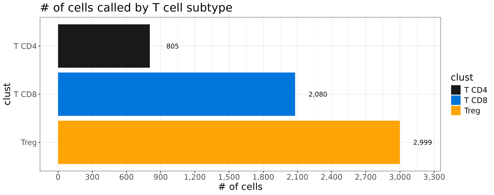
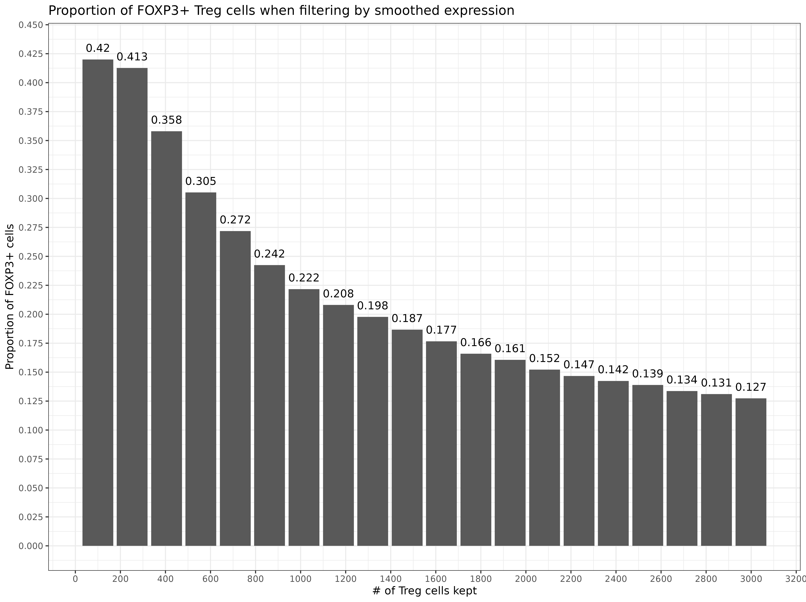
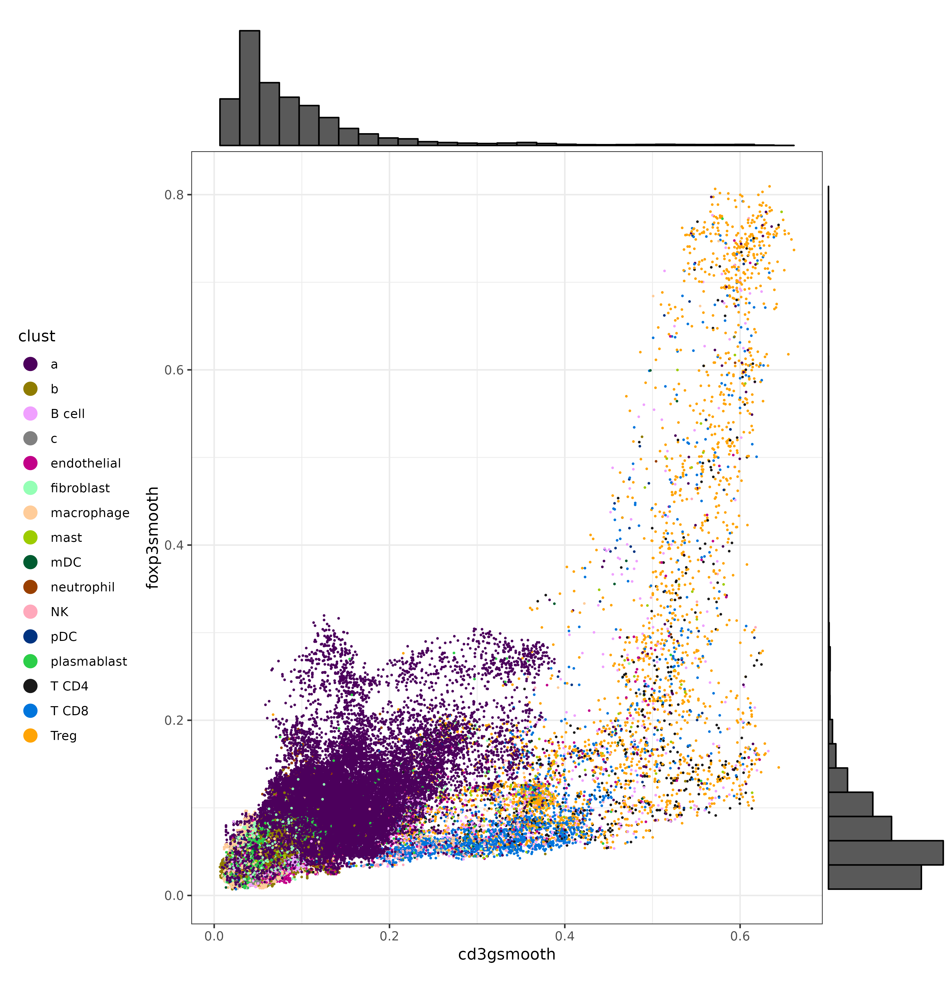

![]()
library(ggplot2)
library(ggrepel)
library(RColorBrewer)
library(data.table)
library(InSituType)
sem <- readRDS("seurat_object.Rds")
### semi-supervised cell typing with 3 unsupervised clusters, using 'ioprofiles' reference matrix
insitu <-
InSituType::insitutype(Matrix::t(sem[["RNA"]]@counts)
,neg = Matrix::colMeans(sem[["negprobes"]])
,reference_profiles = InSituType::ioprofiles
,n_clusts = 3
)
### clean up cell type names and save results back to seurat object
clustdt <- data.table(clust_o = insitu$clust, row.names=names(insitu$clust))
clustdt[,clust:=clust_o]
clustdt[grep("T CD4", clust),clust:="T CD4"]
clustdt[grep("T CD8", clust),clust:="T CD8"]
clustdt[grep("B-cell", clust),clust:="B cell"]
clustdt[,.N,by=.(clust)]
sem@meta.data$clust <- NULL
sem <-
Seurat::AddMetaData(sem
,data.frame(clustdt[,.(clust, clust_o)]
,row.names=names(insitu$clust)
)
)1 Introduction
Marker genes are genes that are expressed primarily within a single cell type, and are often used to delineate and label clusters during cell typing in a scRNAseq analysis.
With spatially-resolved transcriptomics (SRT) data, a number of factors can contribute to challenges in a cell typing analysis, as well as hinder our ability to visualize our favorite marker genes. For example, these factors may include lower sensitivity compared to scRNAseq data, background due to autoflourescence, and segmentation error.
A common feedback for new SRT analysts when dealing with SRT data may be along the lines of “Why don’t I see gene ‘X’ in a majority of cells for cell type ‘Y’?”.
In this post we’ll discuss:
- Why counts of a single marker gene are not definitive of cell type
- How to derive more useful / less noisy / “smoothed” expression of marker genes
- How to perform fine-grained subtyping using smoothed marker genes, with T-cell subtyping as motivation
2 A motivating example: Noisy T-cell typing in non-small cell lung cancer tissue
For example, here is a data set below consisting of non-small cell lung cancer tissues. Let’s load it in, run some quick unrefined-cell typing using InSituType (Danaher et al. 2022), and take a look at the initial results.
Here we can plot the InSituType clusters (‘clust’) on the UMAP. This UMAP was created using ‘Analytic Pearson residuals’ (Lause, Berens, and Kobak 2021).
Code
umapf <- function(umapreduc
,clustercol
,semuse
,cls=NULL
,xlim = NULL
,ylim = NULL){
umapd <-
data.table(semuse@reductions[[umapreduc]]@cell.embeddings
,keep.rownames = TRUE)
setnames(umapd, c(names(umapd)[2:3]), c("UMAP_1", "UMAP_2"))
obsmrk <- merge(data.table(semuse@meta.data), umapd
,by.x="cell_ID"
, by.y="rn")
obstxt <- obsmrk[,lapply(.SD, median),by=c(clustercol),.SDcols=paste0("UMAP_",1:2)]
p <-
ggplot(obsmrk, aes(UMAP_1, UMAP_2, color=.data[[clustercol]])) +
geom_point(size=0.2) +
theme_bw() + coord_fixed(xlim=xlim, ylim=ylim) +
geom_label_repel(data=obstxt, aes(x=UMAP_1, y=UMAP_2, label=.data[[clustercol]]),show.legend=FALSE
,inherit.aes=FALSE,color='black')
if(is.null(cls)){
p <- p +
scale_color_manual(values=rep(unname(pals::alphabet()), 3)
,guide=guide_legend(override.aes=list(size=4)))
} else {
p <- p +
scale_color_manual(values=cls
,guide=guide_legend(override.aes=list(size=4)))
}
return(p)
}ctpal <- c('#C20088','#005C31','#2BCE48'
,'#4C005C','#F0A0FF','#003380'
,'#FFCC99','#8F7C00','#9DCC00'
,'#191919','#94FFB5','#0075DC'
,'#FFA8BB','#FFA405','#993F00'
,'#808080')
names(ctpal) <- c('endothelial','mDC','plasmablast'
,'b','B cell','pDC'
,'macrophage','a','mast'
,'T CD4','fibroblast','T CD8'
,'NK','Treg','neutrophil'
,'c')
umapf("pearsonumap", "clust", sem, cls = ctpal)Let’s zoom in on some of the supervised clusters we hoped to identify below. We can see that some of the major cell types are somewhat clearly delineated on the UMAP.
- Lymphocytes; T-cell types (T CD8, T CD4, and Treg) are clustered together, and near the ‘B cell’ cluster.
- Myeloid cell types; (macrophage, pDC, mDC) are clustered in a similar area.
But there does appear to potentially be some noise in delineating cell types within those major categories.
umapf("pearsonumap", "clust", sem, cls = ctpal, xlim = c(-5.5, 6.5), ylim = c(-0.01, 7.2))We can focus on T cells in this dataset as a driving example for using smoothing as an approach for addressing challenging cell typing and visualization problems.
Canonical marker genes for T cells include
- CD3 (expected to be expressed in all T-cell types),
- CD4 (commonly used together with CD3 to identify T CD4 cells. CD4 can also be expressed in myeloid cells.)
- FOXP3 (commonly used together with CD3 to identify Treg cells. Treg cells are a special subset of T CD4 cells)
- CD8A and CD8B (used together with CD3 to identify T CD8 cells)
First, let’s take a look at the relative frequency of our T-cell clusters ‘Treg’, ‘T CD8’, and ‘T CD4’. Tregs are supposed to be a rare sub type of T CD4 cells. Yet we have more than 3x as many Tregs called than we do T CD4.
Code
bard <- data.table(sem@meta.data)[,.N,by=.(clust)]
bard[,clust:=factor(clust, levels=bard[order(-N),clust])]
ggplot(bard[grep("^T",clust)], aes(x=clust, y=N,fill=clust)) +
theme_bw() +
theme(text=element_text(size=16)) +
geom_bar(stat='identity') +
scale_fill_manual(values=ctpal, guide = guide_legend(reverse=TRUE)) +
scale_y_continuous(n.breaks=12, labels = scales::comma, name = "# of cells") +
labs(title="# of cells called by T cell subtype") +
geom_text(aes(x=clust, y=N + 200, label=scales::comma(N))) +
coord_flip()
Do we really have this many Treg cells in our data?
To gather more evidence toward answering this kind of question, we can calculate the proportion of cells in each cell type expressing a particular marker gene, along with a fold change comparison for each cluster relative to other clusters.
Code
totalcount_norm <- function(sm){
libsizes <- Matrix::colSums(sm)
scalefactor <- mean(libsizes)
libsizes[libsizes==0] <- 1
normed <- sm %*% Matrix::Diagonal(x=scalefactor/libsizes)
dimnames(normed) <- dimnames(sm)
return(normed)
}
clusterwise_fold_change_stats <- function(cnts=NULL, normed = NULL, metainfo, clustercol){
if(missing(normed)){
normed <- totalcount_norm(cnts)
}
outl <- list()
for(ii in unique(metainfo[[clustercol]])){
cells_ii <- metainfo[metainfo[[clustercol]]==ii,cell_ID]
cells_iiprime <- metainfo[metainfo[[clustercol]]!=ii,cell_ID]
cluster_expr_ii <- Matrix::rowMeans(normed[,cells_ii,drop=FALSE])
cluster_expr_iiprime <- Matrix::rowMeans(normed[,cells_iiprime,drop=FALSE])
cluster_prop_ii <- Matrix::rowMeans(normed[,cells_ii,drop=FALSE] > 0)
cluster_prop_iiprime <- Matrix::rowMeans(normed[,cells_iiprime,drop=FALSE] > 0)
fctbl <- data.table(cluster=ii
,cluster_expr = cluster_expr_ii
,clusterprime_expr = cluster_expr_iiprime
,gene = names(cluster_expr_ii)
,cluster_prop = cluster_prop_ii
,clusterprime_prop = cluster_prop_iiprime
)[,typ:=clustercol]
fctbl[,fold_change:=cluster_expr / clusterprime_expr]
fctbl[,fold_change_prop:=cluster_prop / clusterprime_prop]
outl[[paste0(ii)]] <- copy(fctbl)
}
return(fc = rbindlist(outl))
}We can see that FOXP3 is expressed in a much larger frequency in Treg cells relative to other T-cell subtypes– this is good.
However, only 12.7% of our Treg cells are FOXP3 positive, which may be a concern given that we have so many more Treg cells than other T-cell subtypes.
cluster_level_stats <-
clusterwise_fold_change_stats(cnts = sem[["RNA"]]@counts
,metainfo = data.table(sem@meta.data)
,clustercol = "clust")
bard <- cluster_level_stats[gene=="FOXP3"][grep("^T",cluster)]
bard[,cluster:=factor(cluster, levels=bard[order(-cluster_prop),cluster])]
ggplot(bard, aes(x=cluster, y=cluster_prop, fill=cluster)) +
theme_bw() +
theme(text=element_text(size=16)) +
geom_bar(stat='identity') +
scale_fill_manual(values=ctpal, guide = guide_legend(reverse=TRUE)) +
scale_y_continuous(n.breaks=12, labels = scales::comma, name = "Proportion of cells expressing the FOXP3 marker") +
labs(title="FOXP3") +
geom_text(aes(x=cluster, y=cluster_prop + 0.01, label=formatC(cluster_prop,3))) +
coord_flip()At this stage, one may reasonably wonder: “If we define a Treg cell based on FOXP3 expression, why not call a cell”Treg” only if it is expressing FOXP3?”
Here we can illustrate the challenge this would present by plotting FOXP3 expression on the UMAP. On the one hand, if we look closely, we can see what looks like might be a “hot spot” on the UMAP where we are calling Treg cells, and we also have higher FOXP3 expression.
But setting a threshold based on FOXP3 expression to define our Treg cells would be futile.
We have many cells near our ‘FOXP3 hotspot’ which may very well be Tregs, but do not have any counts of the marker gene. On the other hand, we can see cells of all types, all over the UMAP, which have one or several counts of FOXP3 expressed possibly due to some form of background.
Code
marker_umap_plot <- function(marker_matrix, marker, sem
,umapreduc, scale_expr = TRUE
,xlim=NULL,ylim=NULL){
pd <-
data.table(sem@reductions[[umapreduc]]@cell.embeddings
,keep.rownames = TRUE)
setnames(pd, c(names(pd)[1:3]), c("cell_ID", "UMAP_1", "UMAP_2"))
pd[match(colnames(marker_matrix), cell_ID),(c(marker)):=marker_matrix[marker,]]
setkeyv(pd, marker)
if(scale_expr){
p <-
ggplot(pd
,aes(x=UMAP_1, y = UMAP_2, color=scale(.data[[marker]])))
} else {
p <-
ggplot(pd
,aes(x=UMAP_1, y = UMAP_2, color=.data[[marker]]))
}
p <- p +
geom_point(size=0.1) +
scale_color_gradientn(colors=brewer.pal(9, "Reds")) +
theme_bw() +
scale_x_continuous(n.breaks=10) +
scale_y_continuous(n.breaks=10) +
labs(title=marker) + coord_fixed(xlim=xlim,ylim=ylim)
return(p)
}Code
raw_foxp3_plot <-
marker_umap_plot(sem[["RNA"]]@counts, "FOXP3", sem, "pearsonumap"
,xlim = c(-5.5, 6.5), ylim = c(-0.01, 7.2),scale=FALSE) +
labs(title="raw FOXP3")
ctpal_sub <- ctpal
ctpal_sub[grep("^T",names(ctpal_sub),invert=TRUE)] <- "grey77"
cowplot::plot_grid(
raw_foxp3_plot
,umapf("pearsonumap", "clust", sem
,cls = ctpal_sub, xlim = c(-5.5, 6.5), ylim = c(-0.01, 7.2))
,nrow=2
) +
theme(plot.background = element_rect(fill = 'white',color='white')) +
cowplot::panel_border(remove=TRUE) 3 Using ‘smoothed’ FOXP3 to highlight Treg focal point and refine cell types.
One potential approach to cleaning this up is to use some form of ‘smoothed’ marker gene expression, rather than the raw FOXP3 counts.
We can describe the calculation for ‘smoothed’ marker expression in two basic steps:
- Find the \(K\) nearest neighbors of each cell in UMAP space.
- Average the raw (or normalized) expression of the gene across that cells nearest neighbors.
There’s a few different ways we might think about motivating this approach. The UMAP is an approximate manifold projection, which takes a low (2-d) representation of our high-dimensional (960 genes) data set. The manifold is ‘locally connected’, meaning cells near each other in UMAP space are also similar to each other in expression space. By averaging the expression of a marker gene of interest across cells with similar profiles, we can make a simple imputation of what we’d expect to see for the marker gene, given other cells of similar expression profiles.
This function below identifies the nearest neighbors in UMAP space, and makes a smoothing matrix, which can be used to get the average expression of any gene among a given cell’s nearest neighbors. Here is a simple implementation of the function, to take a ‘Seurat’ object as input, but could easily be modified for other data formats.
## create a column-standardized nearest neighbor matrix
## based on nearest neighbors in umap coordinates
#'
#' @param sem a seureat object, which contains the UMAP reduction.
#' @param umapreduc name of the umap reduction, i.e. "umap"
#' @param n_neighbor number of nearest neighbors to be identified.
#'
#' @return "smoother", a smoothing matrix. expression (genes x cells ) x smoother(cells x cells) ,
#' will create an averaged expression across nearest neighbors.
#'
umap_nn <- function(sem, umapreduc, n_neighbors=100){
## extract umap coordinates
umapd <-
data.table(sem@reductions[[umapreduc]]@cell.embeddings
,keep.rownames = TRUE)
setnames(umapd, c(names(umapd)[1:3]), c("cell_ID", "UMAP_1", "UMAP_2"))
## identify nearest n_neighbors (+1 includes the cell as a neighbor to itself)
nn_umap <- RANN::nn2(umapd[,.(UMAP_1, UMAP_2)],k = n_neighbors + 1)$nn.idx
nn_umap <- data.table::melt(cbind(umapd[,.(cell_ID)], data.table(nn_umap))
, id.vars=c("cell_ID", "V1"))
colnames(nn_umap) <- c("cell_ID1", "cell_ID1_idx", "neighbor", "cell_ID2_idx")
nn_umap <- merge(nn_umap
, nn_umap[,.(cell_ID2=cell_ID1, cell_ID2_idx=cell_ID1_idx)][
,unique(.SD)],by="cell_ID2_idx")
## Cell x cell neighbor indicator matrix
wumap <- Matrix::sparseMatrix(i = c(unique(nn_umap$cell_ID1_idx), nn_umap$cell_ID2_idx)
,j=c(unique(nn_umap$cell_ID1_idx), nn_umap$cell_ID1_idx)
,x=1)
rownames(wumap) <- colnames(wumap) <- nn_umap[order(nn_umap$cell_ID1_idx),unique(cell_ID1)]
## Column standardize, so that columns (cells) sum to 1, and each neighbor given equal weight.
mumap <- Matrix::sparseMatrix(i=1:ncol(wumap)
,j=1:ncol(wumap)
,x=1/Matrix::colSums(wumap)
)
dimnames(mumap) <- dimnames(wumap)
smoother <- mumap %*% wumap
smoother <- smoother[,colnames(sem)]
return(smoother)
}Here, we can apply our ‘smoothing matrix’ to some T-cell marker genes and compare the difference on the UMAP. Whereas raw marker expression is noisy and sparse, smoothed expression clearly highlights the focal points for each marker on the UMAP.
Code
smoother <- umap_nn(sem, "pearsonumap", n_neighbors = 500)
sem <- SetAssayData(sem, "data", assay = "RNA", new.data = totalcount_norm(sem[["RNA"]]@counts))
smoothed_tcell_markers <- sem[["RNA"]]@data[c("FOXP3","CD3G","CD8B", "CD4"),] %*% smoother
plist <- list()
for(g in c("FOXP3", "CD8B","CD3G")){
plist[[paste0(g,".smooth")]] <-
marker_umap_plot(smoothed_tcell_markers, g, sem, "pearsonumap"
,xlim = c(-5.5, 6.5), ylim = c(-0.01, 7.2)) +
labs(title=paste0("smooth ",g))
plist[[paste0(g,".raw")]] <-
marker_umap_plot(sem[["RNA"]]@counts, g, sem, "pearsonumap"
,xlim = c(-5.5, 6.5), ylim = c(-0.01, 7.2)) +
labs(title=paste0("raw ",g))
}
cowplot::plot_grid(plotlist=plist, nrow=3) +
theme(plot.background = element_rect(fill = 'white',color='white')) +
cowplot::panel_border(remove=TRUE) From here, we could take a number of different approaches to ‘clean up’ our T-cell calls. For example, because Tregs are a subset of T CD4 cells, we might consider reassigning them to T CD4 if they have low ‘smoothed FOXP3’ expression.
Below, we could rank the Treg cells by their smoothed FOXP3 expression, as a way of measuring our confidence in the cell type call.
If we kept all of our Treg cells as Tregs, then 12.7% would be FOXP3+. If we keep only the top 100 cells, 42% would be FOXP3+.
Code
met <- data.table(sem@meta.data)
met[["foxp3smooth"]] <- smoothed_tcell_markers["FOXP3",met[["cell_ID"]]]
met[["foxp3raw"]] <- sem[["RNA"]]@counts["FOXP3",met[["cell_ID"]]]
### calculate pct of actual FOXP3 positive Tregs, ranking by smoothed FOXP3
treg_filter <- met[clust=="Treg"][order(-foxp3smooth)][,rnk:=1:.N]
treg_filter[,pct_foxp3_positive:=cumsum(foxp3raw > 0)/(rnk)]
ggplot(treg_filter[seq(100,.N,length.out=20)]
,aes(x=rnk, y=pct_foxp3_positive)) +
geom_bar(stat='identity') +
theme_bw() +
scale_y_continuous(n.breaks=20) +
scale_x_continuous(n.breaks=20) +
geom_text(aes(x=rnk, y=pct_foxp3_positive + 0.01, label=formatC(pct_foxp3_positive,3))) +
labs(title="Proportion of FOXP3+ Treg cells when filtering by smoothed expression"
,x="# of Treg cells kept"
,y="Proportion of FOXP3+ cells")
We can also make a few scatter plots to show the bivariate distributions of some of these T cell markers, and color the cells by their original cell type labels. We can certainly see that each marker has a cluster of cells with strong, high-expression. On the other hand, there is a gray area at which unambiguous delineation between cell types becomes challenging.
Code
met[["cd3gsmooth"]] <- smoothed_tcell_markers["CD3G",met[["cell_ID"]]]
met[["cd3graw"]] <- sem[["RNA"]]@counts["CD3G",met[["cell_ID"]]]
met[["cd4smooth"]] <- smoothed_tcell_markers["CD4",met[["cell_ID"]]]
met[["cd4raw"]] <- sem[["RNA"]]@counts["CD4",met[["cell_ID"]]]
met[["cd8bsmooth"]] <- smoothed_tcell_markers["CD8B",met[["cell_ID"]]]
met[["cd8braw"]] <- sem[["RNA"]]@counts["CD8B",met[["cell_ID"]]]
scatterp1 <- ggplot(met, aes(cd3gsmooth, foxp3smooth,color=clust)) +
geom_point(size=0.2) +
theme_bw() +
scale_color_manual(values = ctpal, guide=guide_legend(override.aes=list(size=4))) +
theme(legend.position="left") +
coord_fixed()
scatterp1 <- ggExtra::ggMarginal(scatterp1, type = "histogram")
print(scatterp1)
scatterp2 <- ggplot(met, aes(cd3gsmooth, cd8bsmooth,color=clust)) +
geom_point(size=0.2) +
theme_bw() +
scale_color_manual(values = ctpal, guide=guide_legend(override.aes=list(size=4))) +
theme(legend.position="left") +
coord_fixed()
scatterp2 <- ggExtra::ggMarginal(scatterp2, type = "histogram")
print(scatterp2)
scatterp3 <- ggplot(met, aes(cd4smooth, foxp3smooth,color=clust)) +
geom_point(size=0.2) +
theme_bw() +
theme(legend.position="left") +
scale_color_manual(values = ctpal, guide=guide_legend(override.aes=list(size=4))) +
coord_fixed()
scatterp3 <- ggExtra::ggMarginal(scatterp3, type = "histogram")
print(scatterp1)CD3G vs. FOXP3:

CD3G vs. CD8B:
CD4 vs. FOXP3:
Here is a quick comparison of what the UMAP might look like after refining Tregs, using different filters.
Code
plist <- list()
for(ii in c(5, 10, 15)){
met[,clust_filtered:=clust]
threshold <- treg_filter[seq(100,.N,length.out=20)][ii][["foxp3smooth"]]
met[foxp3smooth <= threshold &
clust_filtered=="Treg",clust_filtered:="T CD4"]
sem@meta.data$clust_filtered <- NULL
sem <- Seurat::AddMetaData(sem, metadata = data.frame(met[,.(clust_filtered)], row.names = met[["cell_ID"]]))
plist[[paste0(ii)]] <-
umapf("pearsonumap", "clust_filtered", sem
,cls = ctpal_sub, xlim = c(-1, 3), ylim = c(2.5, 5)) +
labs(title=paste0("Filtered Tregs (smooth FOXP3 > ",formatC(threshold,3), ")")) +
theme(legend.position="none")
}
cowplot::plot_grid(plotlist = plist,nrow=3) +
theme(plot.background = element_rect(fill = 'white',color='white')) +
cowplot::panel_border(remove=TRUE) 
4 Other marker genes
It may be worth mentioning that marker genes for any cell type (not just T cells) could potentially be utilized for visualization or cell type refinement.
Here’s a few others that highlight key regions on the UMAP:
Code
mrks <- c(
"FOXP3"
,"CTLA4"
,"PDCD1"
,"IL32"
,"IL7R"
,"CD8A"
,"CD8B"
,"CD3E"
,"CD3D"
,"CD3G"
,"KLRK1"
,"MS4A1"
,"CD19"
,"CD79A"
,"IGKC"
,"JCHAIN"
,"IGHG1"
,"IGHG2"
,"IGHM"
,"IGHA1"
,"MZB1"
,"XBP1"
,"CLEC10A"
,"IL1B"
,"ITGAX"
,"IL3RA"
,"GZMB"
,"GNLY"
,"GZMA"
,"CXCL8"
,"CD68"
,"CD163"
,"C1QA", "C1QB", "C1QC", "LYZ", "MMP9", "IL18"
,"VWF", "PECAM1", "RGS5", "SPARCL1"
,"KRT5", "KRT17", "KRT19", "EPCAM"
,"COL1A1", "COL1A2", "COL3A1"
,"TIGIT"
,"CPA3", "TPSB2", "TPSAB1", "KIT"
,"CSF3R"
)
smoothed_markers <- sem[["RNA"]]@data[mrks,] %*% smoother
plist <- list()
for(g in c("CD68", "GZMA", "GNLY", "MS4A1", "C1QC", "VWF")){
plist[[paste0(g,".smooth")]] <-
marker_umap_plot(smoothed_markers, g, sem, "pearsonumap"
,xlim = c(-5.5, 6.5), ylim = c(-0.01, 7.2)) +
labs(title=paste0("smooth ",g))
}
cowplot::plot_grid(plotlist=plist, nrow=3) +
theme(plot.background = element_rect(fill = 'white',color='white')) +
cowplot::panel_border(remove=TRUE) A clustering analysis based only on smoothed expression of known marker genes could serve as a useful aid or even a standalone approach for cell typing. For example, here is a naive k-means clustering using a number of different marker genes, and with their clusters colored on the UMAP.
kmd <- as.data.table(Matrix::t(smoothed_markers))
kmd <- kmd[,lapply(.SD, scale)]
kmclus <- kmeans(kmd, centers=20)
names(kmclus$cluster) <- colnames(smoothed_markers)
met <- data.table(sem@meta.data)
met[match(names(kmclus$cluster),cell_ID),kmclust:=as.character(kmclus$cluster)]
sem@meta.data$kmclust <- NULL
sem <- Seurat::AddMetaData(sem, metadata = data.frame(met[,.(kmclust)], row.names=met[["cell_ID"]]))
umapf("pearsonumap", "kmclust", sem)5 Conclusion
In this vignette, I discussed a method that can be used to get an expected expression of a marker gene in a cell, given that cell’s nearest neighbors in UMAP space, along with potential applications to visualization and cell type refinement.
References
Danaher, Patrick, Edward Zhao, Zhi Yang, David Ross, Mark Gregory, Zach Reitz, Tae K. Kim, et al. 2022. “Insitutype: Likelihood-Based Cell Typing for Single Cell Spatial Transcriptomics.” bioRxiv. https://doi.org/10.1101/2022.10.19.512902.
Lause, Jan, Philipp Berens, and Dmitry Kobak. 2021. “Analytic Pearson Residuals for Normalization of Single-Cell RNA-Seq UMI Data.” Genome Biology 22 (September): 258. https://doi.org/10.1186/s13059-021-02451-7.